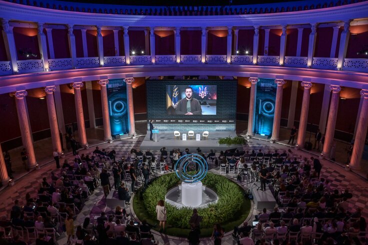
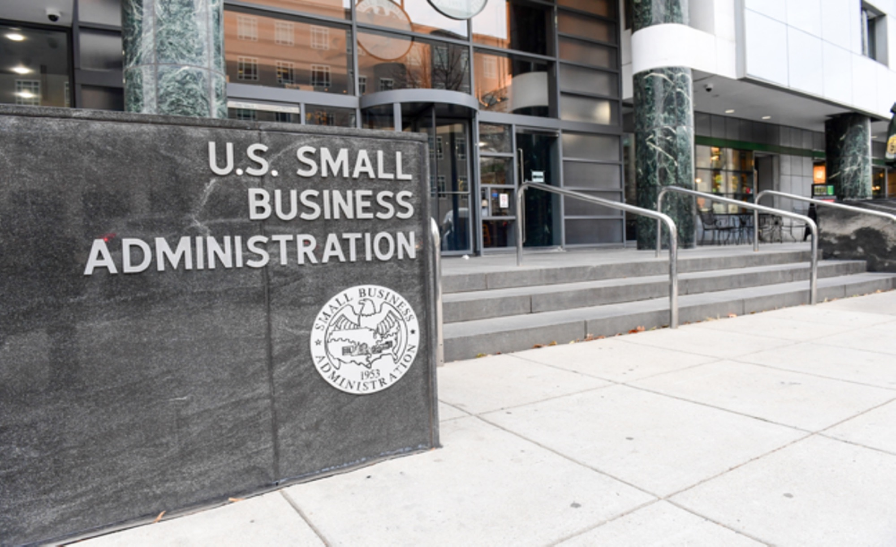

Case studies: digital strategy, web, AI & growth
Work that gets noticed.
Twenty-six engagements, from The New York Times to the U.S. Small Business Administration. Filter by sector, or start with the one below.

Holberton NYC
Filling software engineering cohorts with a sharper site, targeted PPC and a louder community.
Read the case →
Athens Democracy Forum
The New York Times. A yearly forum turned into a year-round conversation.

Art for Tomorrow
The New York Times. Social strategy and live event coverage.

LAU New York
The digital hub for a centennial gala at the New York Public Library.

Duggal Greenhouse
Website, online booking and two years of social for a Brooklyn venue.

XM Arabia
Influencer campaigns across YouTube, X and Telegram in Türkiye.

Decibel Events
Website, SEO blogging and social for an event planner.

U.S. Small Business Administration
Melbourne Institute of Dance
FortNine

Risepoint

LAU Academy of Continuing Education

Talentdu

Circuhealth Clinic

Wills and Co Advisory Group

Ara Water

Duggal Visual Solutions

Lana Time

One Stop Parking

Lucinda Loya Interiors

Pinto Collection

Shifting Gaia

LEAG

Lebanon and Beyond

I Lead Generation

Lathea
No case studies in this sector yet.
Your case study
could be next.
Tell us where you want to grow and we'll tell you honestly how we'd get you there.
Book a discovery call →